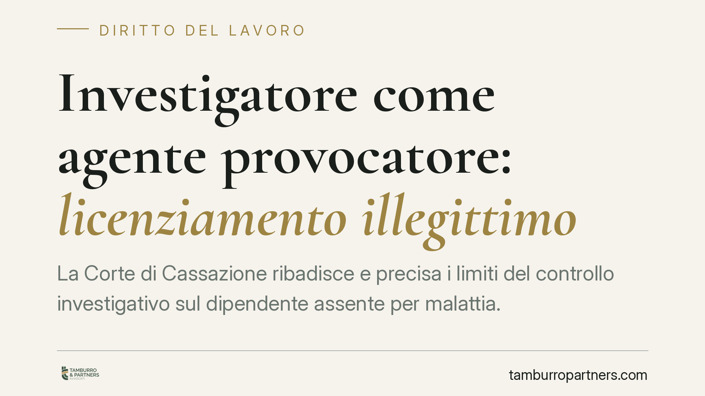

Investigatore come agente provocatore: licenziamento illegittimo
La Corte di Cassazione ribadisce e precisa i limiti del controllo investigativo sul dipendente assente per malattia. Quando l'investigatore non si limita a osservare ma sollecita attivamente la condotta del lavoratore, diventa agente provocatore: la prova così costruita è inutilizzabile e il licenziamento che vi si fonda è illegittimo. Un principio noto, qui confermato con chiarezza.

Il caso
Un datore di lavoro incarica un investigatore privato di verificare la condotta di un dipendente assente per malattia. L'investigatore, però, non si limita a documentare ciò che osserva: fingendosi cliente, sollecita direttamente il lavoratore a tenere un comportamento ritenuto incompatibile con lo stato di malattia dichiarato.
Su quelle risultanze il datore fonda il licenziamento. La Corte di Cassazione, Sezione Lavoro, ha ritenuto le prove inutilizzabili e il recesso illegittimo. La ragione è precisa: l'investigatore ha agito come agente provocatore, cioè come soggetto che non si limita a constatare un fatto preesistente ma induce attivamente la condotta che poi documenta.
> Nota: il numero della pronuncia è in corso di verifica sulla banca dati ufficiale (CED Cassazione) e non viene riportato in questa sede per prudenza redazionale. Il principio di diritto, in ogni caso, è consolidato.
Inquadramento normativo
Il perimetro è definito dallo Statuto dei lavoratori (L. 300/1970).
L'art. 2 prevede che le guardie giurate non possano essere adibite alla vigilanza sull'attività lavorativa dei dipendenti. L'art. 3 stabilisce che i nominativi del personale addetto alla vigilanza dell'attività lavorativa debbano essere comunicati ai lavoratori interessati. Il controllo in senso stretto sulla prestazione, insomma, è circondato da garanzie e trasparenza.
L'art. 5 riserva il controllo sullo stato di malattia e infortunio agli enti pubblici competenti (ASL e INPS, tramite la visita medico-fiscale): il datore non può accertare direttamente l'idoneità o l'infermità del dipendente.
In questo quadro, l'investigazione privata resta ammessa, ma entro confini stretti. L'investigatore può documentare condotte extra-lavorative illecite o palesemente incompatibili con lo stato di malattia dichiarato — ad esempio lo svolgimento di una diversa attività remunerata. Non può, invece, verificare la correttezza clinica della diagnosi, né provocare il comportamento che intende poi utilizzare come prova.
Perché la prova provocata non vale
La distinzione è netta. Un conto è osservare un fatto che si verifica autonomamente; altro è costruirlo, inducendo il lavoratore a un comportamento che, senza la sollecitazione dell'investigatore, non si sarebbe verificato.
Nel secondo caso la condotta non è spontanea: è il frutto di un inganno finalizzato a raccogliere elementi a carico. Per questo la prova è inutilizzabile e non può sorreggere un provvedimento disciplinare. Il licenziamento che vi si basa resta privo di giustificazione.
Implicazioni pratiche
Per il datore di lavoro, affidarsi a un investigatore non mette al riparo da errori. Se l'incarico è gestito oltre i limiti di legge, il materiale raccolto non solo è inefficace, ma espone a soccombenza in giudizio.
Sul piano sanzionatorio, le conseguenze dipendono dalla disciplina applicabile:
- per i lavoratori assunti prima del 7 marzo 2015 si applica l'art. 18 L. 300/1970, che per le ipotesi di tutela reintegratoria attenuata prevede la reintegrazione e un'indennità fino a dodici mensilità;
- per gli assunti dal 7 marzo 2015 si applica il D.Lgs. 23/2015 (contratto a tutele crescenti), con un regime sanzionatorio differente e, di regola, prevalentemente indennitario.
L'esito concreto non è automatico: dipende dalla data di assunzione, dalla qualificazione del vizio e dalle dimensioni dell'impresa. Presentare "reintegra più dodici mensilità" come risultato scontato sarebbe fuorviante.
Cosa fare in concreto
Per il datore di lavoro:
- Circoscrivi l'incarico investigativo alla sola documentazione di condotte extra-lavorative già in atto; non autorizzare sollecitazioni o inganni attivi.
- Verifica che l'attività non sconfini nel controllo diretto dello stato di malattia, riservato a INPS e ASL.
- Conserva mandato e relazione investigativa in forma trasparente, evitando qualsiasi forma di provocazione documentata.
Per il lavoratore:
- Se il licenziamento si fonda su un rapporto investigativo, chiedi di esaminare le modalità concrete di raccolta delle prove.
- Impugna il recesso nei termini di legge (60 giorni per la contestazione stragiudiziale) e fai valutare l'eventuale carattere provocato della prova.
In sintesi
La pronuncia conferma un principio stabile: il controllo investigativo è lecito solo come osservazione di fatti autonomi. Trasformare l'investigatore in agente provocatore rende la prova inutilizzabile e il licenziamento illegittimo.
---
*Contributo informativo a cura di Tamburro & Partners — Avv. Giuseppe Tamburro. Non costituisce parere legale.*
Ogni storia di lavoro ha i suoi tempi.
Se gestisci HR e vuoi un confronto su contenzioso, ispezioni o licenziamenti, scrivi allo studio. Ti rispondiamo entro un giorno lavorativo.